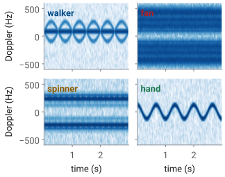
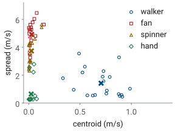
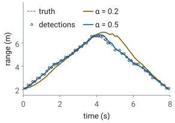

L31 - Classification and Tracking#
Classification and Tracking
Three numbers from a spectrogram tell a walker from a fan, and a two-gain filter holds the walker in range and angle.
Lesson 31 · Antennas, Phased Arrays, and Radar Systems · Dr. Neil Rogers
Printing
To print the slides, switch to present mode and print: one slide a sheet, with room for notes. Print from read mode for the whole lesson.
Learning Objectives
- I can integrate FMCW radar processing with a phased-array front-end to track a moving target.
- I can classify a detected target from its micro-Doppler signature and report the classifier's accuracy.
By the end of the L30 Lab the radar produces a list of detections, each a range, a radial velocity, and an SNR. A detection says that something is there and how fast it is closing. It does not say what the target is, and one detection per frame does not say where the target is going. This lesson adds the last two stages of the chain your final project report explains. The first half classifies a detected target from its micro-Doppler signature, which Lesson 26 introduced, and measures how often the classifier is right. The second half joins the detections into a track in range, with an alpha-beta filter, and in angle, with the monopulse comparison of the L24 Lab. You will work this lesson and its lab on your own, outside class, so this page writes out every step of the reasoning.
Micro-Doppler of a Moving Part
Walker: torso 87 Hz, limbs to 267 Hz, once a stride.
15 cm fan at 1000 rpm: tips 7.9 m/s, ±524 Hz.
Lesson 26 derived the Doppler shift of a rigid target, \(f_D = 2v_r/\lambda\). A real target is rarely rigid. Its body moves at one radial speed, and its parts move about the body at speeds of their own, so each part’s echo carries the body’s Doppler plus a shift from its own motion. The extra shifts are the micro-Doppler, and they change in time with the motion that causes them.
A point on a rotor at radius \(\rho\), turning at \(\Omega\) radians per second and seen edge-on, swings toward and away from the radar along the line of sight, so its radial speed is \(\Omega\rho\sin(\Omega t)\) and its Doppler swings sinusoidally between \(\pm 2\Omega\rho/\lambda\). Every point along a blade does this at its own radius, so a blade fills the band from zero out to its tip. The tips move fastest, at
for a 15 cm desk fan at 1000 rpm, which is \(\pm 2(7.9)/0.030 = \pm 524\ \text{Hz}\) at the course’s 10 GHz.
A walker’s arms and legs swing forward and back about the torso, once a stride, like pendulums. L26’s walker approaches at 1.3 m/s, so the torso sits at 87 Hz, and the limbs swing up to 4.0 m/s, or 267 Hz, on the forward stroke. The body’s Doppler says how fast the target is moving. The micro-Doppler says what is moving, which is the property a classifier needs.
Four Signatures
Walker: a torso line off zero; limbs swing once a stride.
Fan: a steady band to ±524 Hz.
Spinner: steady lines at its tips, ±293 Hz.
Hand: one trace, swinging through zero.

The L31 Lab records four targets: you walking, a desk fan, a fidget spinner, and your hand waving. The figure simulates each one as the lab records it, one range bin sampled once per chirp, with the spectrogram the next frames build. Each has a pattern of its own.
The walker is the only target that goes anywhere, so it is the only one whose pattern sits off zero: the torso is the steady line at 87 Hz and the limbs trace arcs above and below it, once a stride. The fan stays put, so its band is centered on zero, and it is steady, because the blades pass too often for any one of them to appear. The spinner, 7 cm across at 1200 rpm, is a smaller and slower rotor, with tips at \(\pi(0.07)(20) = 4.4\ \text{m/s}\), or 293 Hz. Its weight sits in three lobes near the rim rather than along a blade, and a point moving sinusoidally spends most of its time near its extremes, so its spectrum shows two lines near the tip speed instead of a filled band. The hand is one scatterer moving back and forth. A 0.2 m wave at 1.5 Hz peaks at \(2\pi(1.5)(0.2) = 1.9\ \text{m/s}\), or 126 Hz, and the trace crosses zero twice a cycle, so the hand has no average Doppler at all.
One Range Bin in Slow Time
One sample per chirp: 2 kHz, so ±1 kHz, ±15 m/s.
L26’s 30 cm fan at 1200 rpm (18.8 m/s tips) aliases.
A walker crosses a 0.30 m bin in 0.23 s: sum the bins around it.
Lesson 29 forms the range-Doppler map with an FFT across the chirps of a burst, one FFT for each range bin. That FFT runs in slow time: one sample per chirp, from the same range bin of each chirp’s range profile. A spectrogram is the same FFT taken over short, overlapping pieces of a longer recording instead of over one whole burst, so each column of the spectrogram is a Doppler spectrum of a few tens of milliseconds of the target.
The slow-time samples arrive at the PRI, 0.5 ms, so the sample rate is 2 kHz and the spectrogram covers ±1 kHz, the ±15 m/s that L29 calls \(v_\text{max}\). A part faster than that aliases, as in L26, and wraps to the wrong Doppler. The 30 cm fan of L26’s CW demo, with tips at 18.8 m/s, aliases here, though it did not in CW, where ADI’s script sampled at 0.6 MHz. The lab fan is a 15 cm one, or a large one on its lowest setting.
Two more details make the spectrogram show the target and nothing else.
Stationary returns, the walls and the fan’s own stand, sit at
0 Hz and are far stronger than the parts that move; subtracting the
mean of the slow-time samples removes them, which is what MTI does at
0 Hz. And a target that moves in range leaves its bin: at
1.3 m/s a walker crosses a 0.30 m bin in 0.23 s,
so the spectrogram of one bin shows the walker in pieces. For a walker,
spectrogram takes a slice of bins around the track’s range and sums them,
flipping the sign of every other bin first: a Hann-windowed tone puts
\(-\tfrac{1}{4}\), \(\tfrac{1}{2}\), \(-\tfrac{1}{4}\) of itself in neighboring
bins, so a plain sum cancels whenever the target sits on a bin center, while
the alternating sum makes the three add and reads the middle of each chirp,
where the window is 1.
The range bin comes from the L30 detection list. The course provides
radar_lab.py complete, with a notebook for each lab; its spectrogram is
the one below, and the lab asks you to run it and tune it, not to write it.
def spectrogram(cap, range_bin, n_win=64, hop=16):
"""Slow-time spectrogram of one range bin: (t, f_D, S_dB), peak at 0 dB."""
X = range_fft(cap)[:, range_bin] # one sample per chirp
if X.ndim == 2: # a slice: alternate signs, sum
X = (X * (-1.0) ** np.arange(X.shape[1])).sum(axis=1)
x = X
x = x - x.mean() # stationary returns out
w = np.hanning(n_win)
cols = [np.fft.fftshift(np.fft.fft(x[i:i + n_win] * w))
for i in range(0, len(x) - n_win + 1, hop)]
S = 20 * np.log10(np.abs(np.array(cols).T) + 1e-12)
f = np.fft.fftshift(np.fft.fftfreq(n_win, cap["PRI"]))
t = (np.arange(S.shape[1]) * hop + n_win / 2) * cap["PRI"]
return t, f, S - S.max()
Window Length
A walker’s limbs: \(a = 17\ \text{m/s}^2\); use 64 chirps, 32 ms.
Fan tips: 55 kHz/s, 4.3 ms; no window follows a blade.
Every spectrogram trades resolution in frequency against resolution in time. A window of length \(T_w\) resolves Doppler shifts \(\Delta f = 1/T_w\) apart, the \(\Delta f = 1/T\) of L26, so a long window resolves finely. But a limb’s Doppler does not hold still during the window. If it changes at a rate \(\dot f_D\), it moves by \(\delta f = \dot f_D T_w\) while the window is open, and the column smears that far. A Doppler rate comes from an acceleration \(a\) along the line of sight, \(\dot f_D = 2a/\lambda\), by differentiating \(f_D = 2v/\lambda\).
The resolution improves as the window grows and the smear worsens, so the best window makes the two equal, \(1/T_w = \dot f_D T_w\), which is the second line of the slide. L26’s walker swings its limbs 2.7 m/s about the torso, once a second, so their peak acceleration is \(2\pi(1.0)(2.7) = 17\ \text{m/s}^2\) and
about 59 chirps. We round up to 64 chirps, 32 ms, which resolves 31 Hz (0.47 m/s) and smears the fastest-changing part of the limb trace by 36 Hz. A 16-chirp window resolves only 125 Hz; a 256-chirp window resolves 7.8 Hz but smears the limbs across 145 Hz. The torso, which hardly accelerates, is sharpest in the longest window.
A fan is the opposite case. Its tips accelerate at \(\Omega^2 R\), which for the 15 cm fan at 1000 rpm is \(822\ \text{m/s}^2\), so \(\dot f_D = 55\ \text{kHz/s}\) and the best window is 4.3 ms, nine chirps, which resolves only 234 Hz. No window follows one blade through its turn. A long window shows the blades’ band averaged over many passes, steady in time, and a very short one shows each blade’s flash as it passes broadside. The hop between columns, 16 chirps here, sets only how often we compute a column, not what it resolves.
Window Explorer
The widget computes the spectrogram of the chosen target for a window of 8 to 512 chirps; the readout gives the window in chirps and milliseconds and the resolution \(1/T_w\), and the red bar at the top right is the window’s length on the time axis. It opens on the walker at 64 chirps. Lengthen the window and the torso line sharpens while the limb arcs blur along time; shorten it and the limbs follow their swing while every line thickens in Doppler. Then pick the fan and shorten the window to 16 chirps: the band breaks into the blades’ flashes, 100 a second, since each of the three blades lies across the line of sight twice a turn at 1000 rpm. The targets are the simulated ones of the previous figure.
Three Features
Centroid \(\lambda\bar f/2\): how fast the body moves.
Spread \(\lambda\sigma_f/2\): how fast its parts move about it.
Periodicity: how strongly the spectrogram repeats, at 0.25 to 2 s.
A classifier does not look at a picture; it compares numbers. A feature is one number computed from the spectrogram that takes different values for different classes of target, and three are enough for the lab’s four targets. Each measures a different physical property, which is why they separate targets that any one of them alone would confuse.
Each column of the spectrogram is a Doppler spectrum \(P(f,t)\), in linear power. Before using it we zero every bin more than 15 dB below that column’s peak, so the noise floor does not count as motion. The centroid \(\bar f(t)\) is the power-weighted mean Doppler of the column, and averaged over the recording and multiplied by \(\lambda/2\) it is the body’s radial speed. We keep its magnitude, since a walker may approach or recede. The spread \(\sigma_f(t)\) is the power-weighted RMS width of the column about its centroid; averaged and scaled the same way, it says how fast the parts move relative to the body.
The periodicity asks whether the motion repeats at the pace of a body. We
subtract each Doppler row’s mean, smooth along time over 0.1 s so a
rotor’s blade flashes average out, and correlate the spectrogram with a copy
of itself shifted in time, normalized so a zero shift gives 1. A stride or a
wave repeats every 0.25 to 2 s; the largest correlation at those
shifts is the periodicity. A steady rotor scores near zero, and a walker or a
waving hand scores near 0.8. The provided features computes all three:
def features(t, f, S, lam, floor_db=-15):
"""Centroid and spread in m/s, and periodicity, from one spectrogram."""
S = S - S.max(axis=0, keepdims=True) # each column's peak at 0 dB
P = np.where(S > floor_db, 10 ** (S / 10), 0.0)
fc = (f[:, None] * P).sum(0) / P.sum(0) # centroid, each column
sd = np.sqrt(((f[:, None] - fc) ** 2 * P).sum(0) / P.sum(0))
D = np.maximum(S, floor_db)
D = np.array([np.convolve(row, np.ones(12) / 12, "valid") for row in D])
D = D - D.mean(axis=1, keepdims=True)
dt = t[1] - t[0]
r = [np.sum(D[:, :-n] * D[:, n:]) / np.sum(D ** 2)
for n in range(int(0.25 / dt), int(2.0 / dt))]
return np.array([abs(fc.mean()) * lam / 2, sd.mean() * lam / 2, max(r)])
Nearest-Centroid Classifier

Train: each class’s mean in scaled features.
Classify: the nearest mean.
A nearest-centroid classifier is the simplest one that learns from data. We record a set of training trials of each target, compute the three features of each, and keep each class’s mean, the crosses in the figure. A new trial gets the class whose mean is nearest. The features have different units, m/s for two and none for periodicity, so we first scale each one by its mean \(\mu_i\) and standard deviation \(s_i\) over the training set; without that, the feature with the largest numbers would decide every distance.
The figure plots 20 simulated training trials of each target, recorded the way the lab will record them: walkers at speeds from 0.7 to 1.5 m/s and up to 60° off the line of sight, fans from 700 to 1200 rpm, spinners from 600 to 1500 rpm, waves of different sizes and rates, and an SNR of 3 to 15 dB a chirp. The walkers are the only class off zero in centroid, with a mean of 0.71 m/s. The hands have the least spread, 0.65 m/s, and the most periodicity. The fans and spinners share zero centroid and near-zero periodicity, so only their spread separates them, a mean of 4.9 against 3.7 m/s, and the two clouds overlap: a fast spinner looks like a slow fan.
Thresholds work too: centroid above 0.3 m/s is a walker; otherwise, periodicity above 0.5 is a hand; otherwise, spread above about 4.3 m/s is a fan. A nearest-centroid rule picks those boundaries from the data rather than by eye. The provided classifier is the nearest-centroid one:
def train(X, y):
"""X: one row of features per trial; y: each trial's class."""
mu, sd = X.mean(0), X.std(0)
cents = {c: ((X[y == c] - mu) / sd).mean(0) for c in set(y)}
return mu, sd, cents
def classify(x, model):
mu, sd, cents = model
z = (x - mu) / sd
return min(cents, key=lambda c: np.sum((z - cents[c]) ** 2))
The Confusion Matrix
true \ called |
walker |
fan |
spinner |
hand |
|---|---|---|---|---|
walker |
20 |
0 |
0 |
0 |
fan |
0 |
14 |
6 |
0 |
spinner |
0 |
7 |
13 |
0 |
hand |
0 |
0 |
0 |
20 |
Accuracy \(67/80 = 84\%\), on unseen trials.
Every error is a rotor called the other rotor.
The confusion matrix counts, for each true class (a row), how many trials the classifier called each class (a column). The diagonal holds the correct calls, and every count off the diagonal is a specific mistake. Its accuracy is the diagonal’s total over all trials,
The trials in the matrix are a second set of 20 per class, drawn the same way as the training set but not used to train. A classifier scored on its own training trials has already seen the answers, and its accuracy overstates what it will do on a target it has not seen; in the lab you score it on recordings you did not train on.
The matrix says more than the accuracy does. All 13 errors are a fan called a spinner or a spinner called a fan, the overlap the previous figure showed, while walkers and hands are never wrong. An 84% classifier that never misses a person is a different instrument from one that misses people 16% of the time, and only the matrix tells them apart. It also says what to improve: a feature that measures tip speed better than the RMS spread does, such as the band’s edge, would attack the only errors there are. Finally, the number is an estimate. Five different draws of 80 test trials score between 80% and 91%, so with 20 trials a class report the counts, not only the percentage.
The Alpha-Beta Filter
Predict, compare with the detection \(z_k\), correct.
\(\Delta t = 128\ \text{ms}\), one range-Doppler frame.
A missed frame: predict only.
A detection list is noisy. Each range is the center of a 0.30 m bin, a walker’s body is larger than a bin, some frames miss the target, and nothing in the list says that the detection at 3.1 m in one frame is the same person as the one at 3.3 m in the next. A track joins the detections of one target into a single estimate of its range and velocity, frame after frame. A military radar calls a person on foot a dismount; tracking one is the second half of the L31 Lab.
The alpha-beta filter is the simplest tracker. It assumes the target moves
at a constant velocity over one frame. Each frame it predicts where the
target should be, \(\hat R_k^-\), from the last estimate. It compares the
prediction with the frame’s detection \(z_k\); the difference \(e_k\) is the
residual. It then corrects both estimates by fixed fractions of the
residual: \(\alpha\) of it moves the range, and \(\beta/\Delta t\) of it moves the
velocity. A frame with no detection near the prediction keeps the prediction
and corrects nothing, which is how a track coasts through a miss. The
detection a track accepts is the one nearest its prediction, inside a gate of
a few bins, which is also how two targets keep separate tracks. With 256
chirps of 0.5 ms back to back, one frame is 128 ms. The
provided alpha_beta is the filter as written above:
def alpha_beta(track_meas, alpha, beta, dt):
"""Range track from one detection per frame (NaN for a missed frame)."""
r, v = track_meas[0], 0.0
out = []
for z in track_meas:
r = r + v * dt # predict
if not np.isnan(z):
e = z - r # residual
r, v = r + alpha * e, v + beta / dt * e
out.append((r, v))
return np.array(out)
Choosing Alpha and Beta
\(\beta = \alpha^2/(2-\alpha)\) balances noise against lag.
\(\alpha = 0.5\): 0.08 m RMS on the straights, 0.31 m at the turn.
\(\alpha = 0.2\): smoother, but trails the turn by 1.2 m.

The two gains set how far the track trusts a new detection. A large \(\alpha\) follows each detection closely, noise and all; a small one averages over many frames and smooths the noise, but it is slow to notice a change in velocity, so it lags a target that turns. The usual choice ties the two gains together,
which minimizes the track’s noise and its lag together (the Benedict-Bordner relation), and leaves one number to choose.
The figure simulates the lab’s walk: out from 2 m at 1.2 m/s, a turn lasting a second, and back. The detections are the centers of the 0.30 m bins the walker falls in, with 0.10 m of body jitter, 0.10 m RMS from the truth in all, and 5 of the 63 frames missed. With \(\alpha = 0.5\) and \(\beta = 0.167\) the track holds 0.08 m RMS on the straights, better than the detections themselves, and is off by at most 0.31 m at the turn. For steady-state noise alone, theory gives this filter 0.64 of the detection noise. With \(\alpha = 0.2\) and \(\beta = 0.022\) the track is smoother, but it trails the turn by up to 1.2 m and is still catching up on the way back. The track’s velocity is a second check: it should agree with the Doppler velocity of the detections it accepts.
Angle by Monopulse
Two subarray channels, \(D = 56\ \text{mm}\) apart: one look, no sweep.
Unambiguous within ±15.5° of the steer direction.
Read in the detection’s range-Doppler cell.
Range comes from the FMCW processing; angle comes from the array. Lesson 19 found a bearing by sweeping the beam across the field and taking the peak, one sweep at a time. The L24 Lab measured it in one look with monopulse, comparing the two subarray channels, and that is the method a tracker needs.
The two subarrays’ centers sit four elements, \(D = 56\ \text{mm}\), apart. A wave from angle \(\theta\) reaches one center a path \(D\sin\theta\) before the other, so the two channels differ in phase by
672° per unit of \(\sin\theta\) at 10 GHz, and the second line of the slide turns a measured phase back into an angle. A phase is known only within ±180°, so the angle is unambiguous while \(\vert\sin\theta\vert < \lambda/(2D) = 0.268\), which is ±15.5° about the direction the array is steered. The L24 Lab’s error function, \(\text{Im}\lbrace\Delta\Sigma^*\rbrace/\vert\Sigma\vert^2\), is the same comparison written for the sum and difference beams.
In the radar we take the two channels’ values in the range-Doppler cell where CFAR declared the target. That cell holds the target’s echo with the 256-chirp integration gain of L27, and none of the clutter at other ranges and velocities, which would pull the angle toward itself. Part B therefore records both subarray channels. Which side of broadside reads a positive angle is a hardware-day check, as it was in L19.
A Crossing Walker
At 1 m/s and 4 m the walker moves \(14.3^\circ/\text{s}\).
Sweeps: 15.9° between looks, past the 13.6° beam.
Monopulse: 1.8° a frame.
The track’s predicted angle steers the next frame’s beam.
A walker crossing in front of the radar at 1 m/s, 4 m away, changes bearing at \(v/R = 0.25\ \text{rad/s}\), or 14.3° a second. The GUI’s beam sweep completes about 0.9 sweeps a second, so between two looks the walker moves
more than the array’s beamwidth at 10 GHz, \(0.886\lambda/(Nd) = 13.6^\circ\). A sweep can find a walker who stands still; it cannot hold one who crosses, because the walker can leave the beam between one look and the next. Monopulse measures once a frame, and in 128 ms the walker moves 1.8°, well inside the ±15.5° monopulse window.
The tracker closes the loop. A second alpha-beta filter runs on the monopulse angles, and its prediction for the next frame becomes the next frame’s steer angle, so the walker stays near boresight, where the L24 Lab found the monopulse response straight (about ±5°). Range from the FMCW processing, angle from the array, and the beam pointed by the track: that is the integration objective 4.8 asks for.
One caution for Part B. A walker moving exactly across the line of sight has \(v_r = v\cos 90^\circ = 0\) (L26), so the torso’s echo sits at 0 Hz and MTI removes it. Part B’s walker takes a diagonal path, so the range and the angle both change and the Doppler never vanishes.
Summary
Symbol / idea |
What it is |
Number to remember |
|---|---|---|
\(f_D = 2(v_\text{body} + v_\text{part})/\lambda\) |
micro-Doppler of a moving part |
walker limbs to 267 Hz; fan tips ±524 Hz |
slow time |
one sample per chirp |
2 kHz: ±1 kHz, ±15 m/s |
\(\Delta f = 1/T_w\), \(\delta f = \dot f_D T_w\) |
window: resolution against smear |
best \(T_w = 1/\sqrt{\dot f_D}\); 64 chirps for a walker |
centroid, spread, periodicity |
three features |
\(\lambda\bar f/2\), \(\lambda\sigma_f/2\), autocorrelation at 0.25-2 s |
nearest centroid |
the class whose mean is nearest, in scaled features |
train and test on different trials |
confusion matrix |
true class against the call |
\(67/80 = 84\%\); every error a rotor |
alpha-beta |
predict, residual, correct |
\(\alpha = 0.5\), \(\beta = \alpha^2/(2-\alpha) = 0.167\) |
monopulse |
\(\Delta\phi = 2\pi D\sin\theta/\lambda\) |
\(D = 56\ \text{mm}\); ±15.5° |
crossing walker |
beam sweep against monopulse |
15.9° a sweep, 1.8° a frame |
L31 Lab
Part A: run the notebook’s spectrogram and classifier on GUI captures of four targets; tune the window, add a feature.
Part B: tune \(\alpha\) on a walker’s track.
The L31 Lab is the last stage of the chain your
final project report explains. It runs in the
GUI first, then in the lab’s notebook, which calls the provided
radar_lab.py. In Part A you save captures of the four targets from the GUI
on your own kit, and the notebook computes the spectrogram and the three
features of each L30 detection, trains the classifier on some recordings,
tests it on others, and reports the confusion matrix and the accuracy. Your
tasks are small changes to it: tune the spectrogram window, and add one
feature of your own and see whether the matrix improves. In Part B a walker
crosses the field on a diagonal, the notebook tracks the range with the
alpha-beta filter and the angle by monopulse, and you tune \(\alpha\) against
the walk’s tape marks. Keep the matrix, the track, and the gain you chose:
they are the classification and tracking sections of the report.
Note
The L31 Lab procedure and packet are under construction.